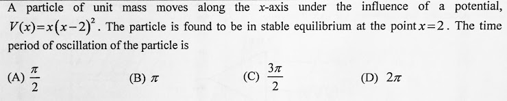
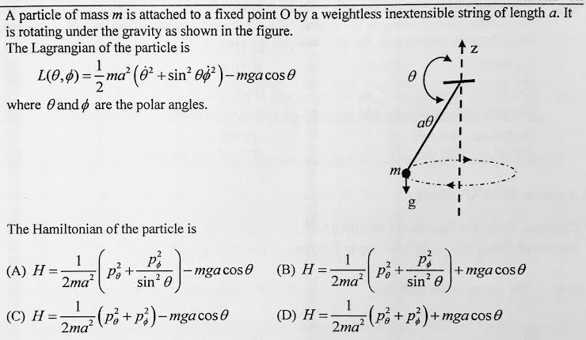
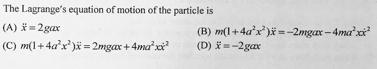

Problem solving page for IIT-JAM, CSIR NET, GATE, JEST, NGPE, KVPY and TIFR exams.
Click over the chapters grey bar to see more
Chapters:
1. Given a matrix \(M= \left[
\begin{array}{cc}
2 & 1\\
1 & 2
\end{array}
\right]\), find \(\cos \left(\frac{\pi M}{6}\right)\)?
2. A cone-shaped surface lamina \(S\) is given by \[z=4-2\sqrt{x^2+y^2},\quad 0\leq z\geq 4\] At each point on S, the density is proportional to the distance between the point and the z-axis.
Find the mass \(m\) of the lamina?
1. A satellite is moving in a circular orbit around the Earth. If \(T,V \text{ and } E\) are its average
kinetic, average potential and total energies, respectively, then how is \(V\) and \(E\) related to \(T\)?
2.

3.

4.

1. Consider a single heat source located at the origin with temperature \[T(x,y,z)=\frac{25}{\sqrt{x^2+y^2+z^2}}\]
calculate the heat flux across the surface \[S=\left\{(x,y,z):z=\sqrt{1-x^2-y^2},x^2+y^2\leq 1\right\}\]
2. For an enthalpy change of \(2257.03 \;kJ/kg\), calculate the entropy change along a \(T = 100^{\circ} C\) isotherm for water going from saturated liquid to
saturated vapor.
1. A 1-D SHO with hamiltonian \(H_o=\frac{p^2}{2m}+\frac{kx^2}{2}\) is subjected to a small perturbation, \(H_1=\alpha x+\beta x^3+\gamma x^4\). The first order correction to the ground state energy is dependent on.
(A) only \(\beta\) (B) \(\alpha\) and \(\gamma\) (C) \(\alpha\) and \(\beta\) (D) only \(\gamma\)
2. A particle is confined to a 1-D potential box with the potential \[\begin{aligned}V(x)&=0,\quad 0\leq x \leq a\\&=\infty, \quad \text{otherwise} \end{aligned}\]
For a small perturbation, \(W=\beta x\), within the box, find the first order correction to the ground state energy?